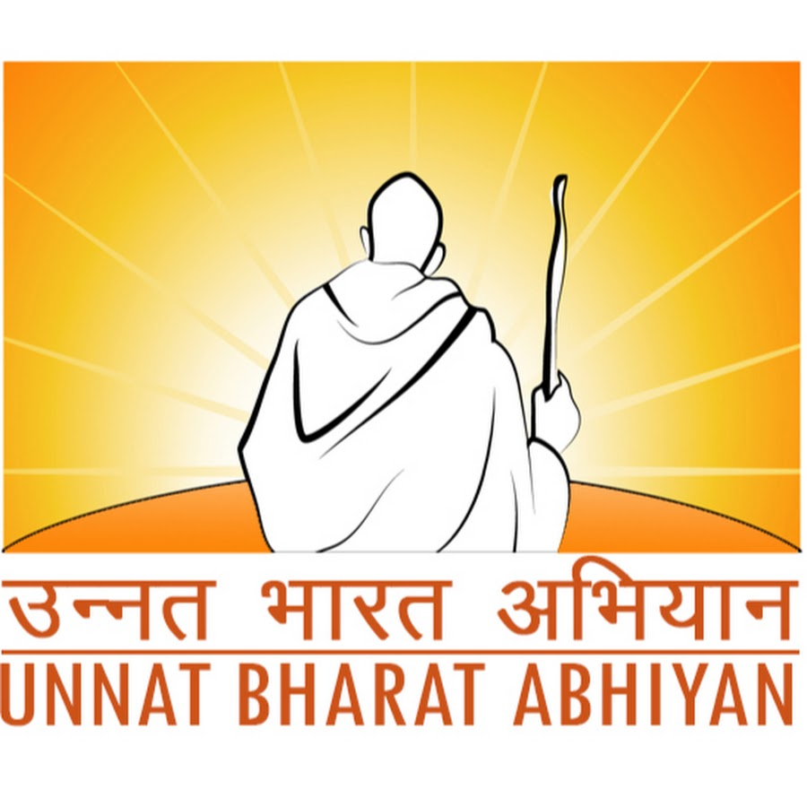

ST. VINCENT PALLOTTI
COLLEGE ENGINEERING AND TECHNOLOGY, NAGPUR
An Autonomous Institute
Unnat Bharat Abhiyan

ST. VINCENT PALLOTTI
COLLEGE ENGINEERING AND TECHNOLOGY, NAGPUR
An Autonomous Institute
Unnat Bharat Abhiyan
UBA students have embarked on a transformative project aimed at revolutionizing transportation in rural India. Their endeavor, titled "Design and Development of Low-Cost Converted E-Bicycle for Panjari Lodhi Village," is a blend of innovative engineering and sustainable development principles. The project's focal point lies in Panjari Lodhi Village, nestled amidst the rustic landscape of rural India, where transportation woes have long plagued the local populace. Recognizing the need for an affordable and eco-friendly mobility solution, the UBA students, armed with their ingenuity and determination, set out to make a difference. At the heart of their initiative is the conversion of old, conventional bicycles into hybrid electric bicycles. This ingenious approach not only breathes new life into discarded cycles but also presents a cost-effective alternative to traditional electric bicycles. By repurposing existing resources, the project aims to achieve a remarkable 40-50% reduction in transportation costs for the residents of Panjari Lodhi Village, thereby fostering economic empowerment and accessibility.
We are proud to announce that the 2021 pass-out alumni of the E&TC Department, Mr. Atharva Hampiholi and Mr. Ashutosh Maske, along with the support of second-year students from the E&TC Department—1) Yogendra Topre, 2) Mehandi Bhoyar, 3) Prajwal Atkale, 4) Prathamesh Lakhe, 5) Rohit Thakre, 6) Sahil Padole, 7) Sakshi Bhoyar, 8) Shruti Kayarkar, 9) Shubhangi Kaikadi, and 10) Tajshree Zade—from St. Vincent Pallotti College of Engineering and Technology, Nagpur, have successfully installed a 'Smart Solar Street Lamp' in the village of Khatmari under the Unnat Bharat Abhiyan, a flagship program of the Government of India for rural development. This solar lamp is equipped with multiple proprietary smart features, including an automatic solar panel cleaning system, automatic battery cutoff under low voltage, automatic night light, and an anti-theft alarm. Due to the accumulation of dust on the surface of solar panels, their efficiency can drop by up to 30%, resulting in a significantly reduced operation time. In the worst-case scenario, the lamp may stop working completely. The automatic cleaning system ensures that the solar lamp continues to function without the need for maintenance. This feature alone increases energy efficiency by 15% to 25%. Additionally, other smart features prevent battery over-discharge, thereby extending battery lifespan and eliminating the need for human intervention to turn the lamp on or off.
In response to the challenges faced by farmers in Vidarbha, such as unpredictable rainfall and water scarcity, our team is developing an innovative solution under the Unnat Bharat Abhiyan 2.0. We are designing and implementing an automated farming system for Khatmari Village, leveraging the power of drone technology and machine learning. This project aims to improve crop yields, reduce reliance on manual labor, and enhance the overall economic well-being of the farming community. By utilizing a DJI Pro drone equipped with a high-resolution camera, we will collect data on various factors like soil moisture and crop health. This data will be analyzed using machine learning algorithms to optimize irrigation, fertilization, and other agricultural practices. Our solution will not only increase efficiency but also minimize risks associated with traditional farming methods, ultimately empowering farmers and contributing to the sustainable development of the region. [Guide: Prof. Priti Golar]

Edusahayog is a comprehensive digital platform designed to revolutionize rural education, developed after extensive research in rural villages. The app features role-based access for students and teachers, motivational content, and personalized goal tracking. It addresses key challenges like inefficient data management and limited resource access through features including study material sharing, government scheme awareness (Yojnaas), attendance management, achievement tracking, SVPCET updates, and announcement systems. The name combines "Edu" (education) and "Sahayog" (Hindi for support), reflecting its mission to provide essential educational tools and resources to rural communities, helping them thrive in the modern world. Benefits and Scope The Edusahayog app commits to yearly updates, with upcoming features including homework submission, quizzes, AI assistant integration, and multi-lingual support. Additionally, the app will expand its reach to more villages, extending its benefits and empowering a broader range of rural communities. The app offers: Streamlined attendance management Improved access to educational resources Increased awareness of government schemes Enhanced communication among students and teachers Holistic development in rural education One such feature prominently displays the student’s aim, a constant reminder of their goals to themselves and their parents. Students Involved: Mohit Bandawar, Nakul Wanjari, Kushal Khadgi, Ishan Sathawane, Archit Kanadkhedkar, Prasad Mankar.

The Virtual Doctor App is a comprehensive healthcare platform developed by Computer Engineering students under the guidance of Dr. Pallavi Wankhede, aimed at enhancing rural healthcare accessibility through technological innovation. The app addresses challenges faced by rural communities in accessing quality healthcare by providing an integrated solution for online appointments, consultations, and pharmacy services. It features three main modules: Patient Module, which allows users to securely log in, book appointments, consult doctors online, and order medicines; Doctor Module, enabling doctors to manage appointments, conduct virtual consultations, and monitor patient health records efficiently; and Pharmacy Module, which allows patients to browse and order medications conveniently. The app incorporates Firebase technology for secure authentication and data management, ensuring a smooth and intuitive user experience. Key functionalities include secure login, doctor profile search, appointment tracking, consultation scheduling, and prescription management. Users can easily search for doctors, view detailed profiles, and book appointments with relevant details like date, time, medical concern, and contact information. Additionally, the app provides a "Booked Appointments" section for users to view and track their scheduled consultations with reminders. The project was successfully developed by students Sameer Bawane, Neeraj Bhandarwar, Atharva Bavge, Ankush Dharmik, Meet Shivhare, Roshan Bhuskute, and Shreyash Wadibhasme, under expert guidance, ensuring a seamless healthcare experience for rural communities by integrating patients, doctors, and pharmacies into a single, efficient platform.

The IoT-Based Seed Sowing Agro-Bot for Kharif Crop is an innovative solution designed to automate the seed-sowing process, improving precision and efficiency in agriculture. This fully autonomous bot leverages IoT, GPS, and real-time sensor data to optimize seed placement, reduce wastage, and ensure ideal crop spacing. Integrated soil moisture and pH sensors provide valuable insights, helping farmers make informed irrigation and fertilization decisions. The system adapts to environmental changes, such as pausing operations during rainfall, minimizing human intervention while enhancing productivity. Built with cost-effective and energy-efficient components, the Agro-Bot is a scalable and adaptable solution for various terrains and crop types. Its web-based interface allows remote monitoring and control, making it accessible for small-scale farmers. By reducing labor costs, improving resource utilization, and promoting sustainable farming, this technology-driven approach empowers rural communities, ensuring higher crop yields, financial stability, and eco-friendly agricultural practices.
The Solar Powered Electric Tricycle is an innovative mobility solution designed to enhance independence and accessibility for persons with disabilities. Equipped with a solar panel integrated into the roof, this eco-friendly tricycle harnesses renewable energy while providing shade for the rider. The electric motor and battery system ensure efficient and reliable operation, reducing dependence on conventional fuel sources. The design is adjustable and convertible, catering to users with varying mobility needs while offering protection from different weather conditions. This project aims to improve mobility, promote sustainability, and create employment opportunities for persons with disabilities in maintenance and production. Built with durable and low-maintenance components, the tricycle features safety enhancements such as brakes, reflective materials, and a waterproof mechanism for battery and motor connections. By combining advanced engineering with a socially impactful vision, this project contributes to a more inclusive and environmentally conscious society.
This project enhances rural lighting infrastructure by integrating solar energy with intelligent automation to provide a sustainable and cost-effective solution for villages. It improves safety, supports socio-economic growth, and ensures reliable illumination. The system features automatic night lighting, an anti-theft alarm, and an automated cleaning mechanism that maintains panel efficiency, increasing energy output by 15-25%. Additionally, a battery management system protects against low voltage, extending battery life. With a total cost of approximately ₹13,000, this affordable and efficient solution offers a self-sustaining, eco-friendly approach to rural electrification.
Food waste is a major global issue, contributing to environmental degradation. Traditional composting methods can be slow and inefficient. To address this, our team—Onkar More, Gunjan Dhore, Vaishnavi Bodhalkar, and Aryan Gaurkar, under the mentorship of Dr. Ashutosh S. Werulkar—is developing a solar-powered smart composter. This system integrates IoT sensors to monitor temperature, pH, and moisture in real-time, ensuring optimal composting conditions. Powered by solar energy, it is both efficient and sustainable, making it suitable for households, farms, and urban waste management. By automating the composting process, this project enhances efficiency, reduces manual effort, and produces high-quality compost. The use of renewable energy ensures minimal environmental impact, promoting a scalable and eco-friendly solution to food waste management.
As part of the 75th-anniversary celebration of Anandwan village, Warora, this project aims to develop accurate 3D architectural models and layered maps for comprehensive spatial analysis. Through detailed surveys and mapping, the project will depict the village’s growth from 1949 to the present, providing in-depth insights into housing settlements, typology, and material technology. Deliverables include 2D floor plans, elevation drawings, technical reports, and interactive 3D models with realistic textures and dimensions. This initiative will assist stakeholders in planning, decision-making, and visualizing Anandwan’s architectural evolution over the decades. The project is expected to be completed between December 2024 and February 2025.
As part of Anandwan’s 75th-anniversary celebration, Vision Fusion is a video editing and production project led by a team of VRAR students under the mentorship of Ashutosh Maske Sir. The project highlights Anandwan’s impact across Healthcare, Livelihood, and General sectors. Utilizing provided data, the team refined and edited healthcare footage to showcase medical services and dedication. For Livelihood and General sectors, on-site filming was conducted to capture authentic narratives of resilience and community spirit. This initiative preserves and presents Anandwan’s legacy through a compelling visual storytelling approach.
This project automates attendance tracking for daily wage workers in factories, workshops, and farms using an RFID-based system. Workers scan their RFID cards at entry and exit points, recording their attendance and work hours directly into Google Sheets for seamless tracking. The system also generates monthly reports and analytics, simplifying wage calculations and reducing errors. Designed for scalability and cost-effectiveness, future enhancements include facial and audio recognition for enhanced security and convenience, making it an efficient workforce management solution for various industries.